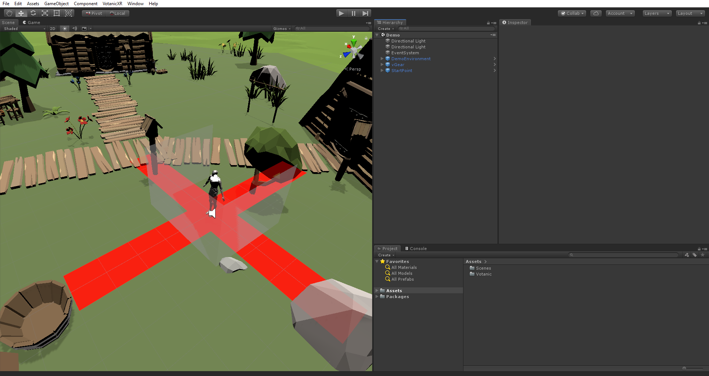
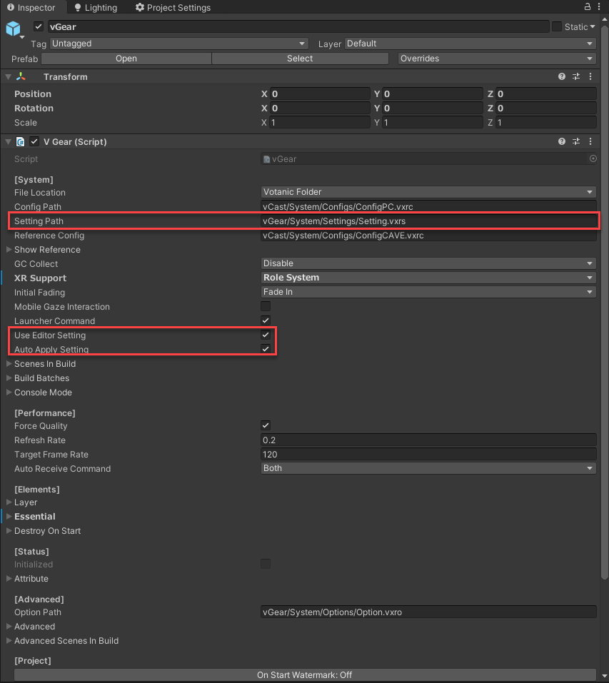
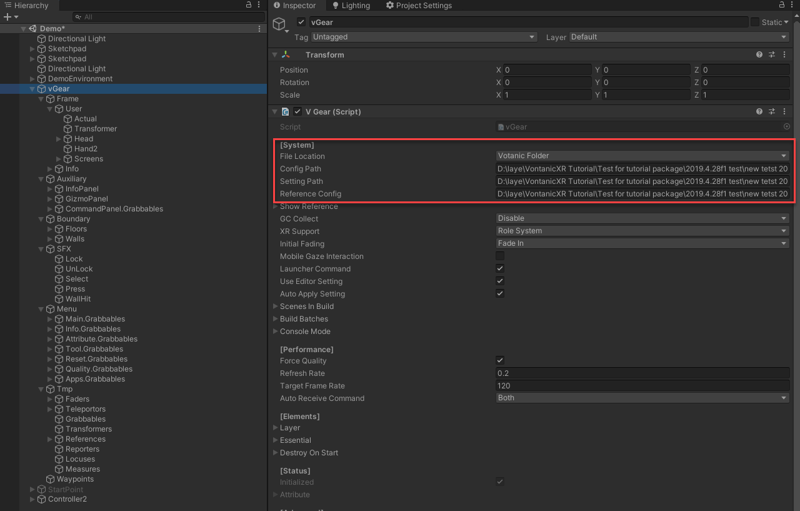
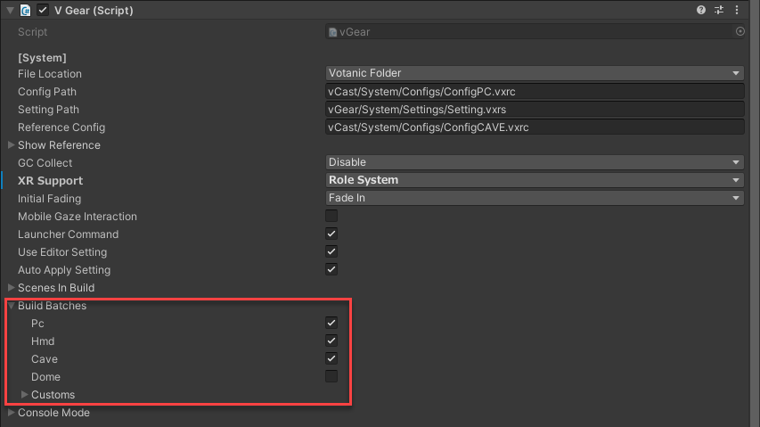

Getting Started
VotanicXR is a Software Development Toolkit of Extended Reality as a plug-in of Unity Engine. This chapter is a quick start guide to build a XR application from a new empty project, and run the build in PC and HMD platform.
In this section, Unity 2018 v.4 is used for the demonstration.
Set Up Tutorial Project
Configure Unity Project Settings
Configure the following settings before import the VotanicXR SDK:
Configure API Compatibility Level. In
Edit > Project Settings > Player, set the Api Compatibility Level to .Net 4.x Equivalent in Configuration section.Configure Editor Setting. In
Edit > Project Settings > Editor, set the Version Control to Visible Meta Files and Asset Serialization to Mixed.Configure Build Architecture. In
File > Build Settings, set the Architecture to x86_64.
Import VotanicXR and tutorial content
Import VotanicXR Package
The VotanicXR for Unity SDK Package can be accessed from the VotanicXR Suite.
Select Unity SDK will open the VotanicXR Unity SDK folder shown below:

The VotanicXR 2020 for Unity SDK is available in two variations: VotanicXR 2020 for 2018.4 - targeted for Unity 2018.4 version and VotanicXR 2020 for 2019.2+ - targeted for Unity 2019.2 or above. The below table highlight the corresponding unity version and VotanicXR SDK version. VotanicXR 2020 may work with newer Unity releases than these listed in the table, but full compatibility is not guaranteed. Due to limitation of the Unity engine, it is highly recommended that you do not switch major release version of the Unity engine for your project once it is set up with the corresponding VotanicXR Unity SDK.
| Unity Version | VotanicXR SDK |
|---|---|
| < 2018.4 | -not supported- |
| 2018.4 | VotanicXR_2020.x for 2018.4.unitypackage |
| 2019.1 | -not supported- |
| 2019.2 – 2019.4 | VotanicXR_2020.x for 2019.2+ [NET].unitypackage |
The VotanicXR 2020 for Unity SDK importing process is a bit different for Unity 2018 and Unity 2019 due to Unity changing the networking system in recent versions. Please follow the importing procedure for the corresponding version below:
For Unity 2018
Right-click in Project windows. Click
Import Package > Custom Package, and select the VotanicXR SDK package.Select all files in the
Importing Packagedialog, and clickImportbutton.
For Unity 2019
Go to
Unity Package Managerand installMultiplayer HLAPIfor this series of tutorial.Right-click in Project windows. Click
Import Package > Custom Package, and select the VotanicXR SDK package.Select all files in the
Importing Packagedialog, and clickImportbutton.
Import Tutorial Package
Download Tutorial Package
- Click here to download the tutorial package.
Import the Tutorial Package of VotanicXR:
- Right-click in Project windows.
Click Import Package > Custom Package, and select the tutorial package download. - Select all files in the
Importing Packagedialog, and clickImportbutton.
Note: Tutorial package must be imported after the VotanicXR package, as some tutorial prefabs and scripts require VotanicXR base classes and materials.
Add VotanicXR Manager to Scene
Open Sample Scene
In Project windows, select Assets > Votanic > VotanicXR_Tutorial > Tutorial01_GettingStarted, open the Demo scene.

Add vGear SDK Manager
Right-click in the
Hierarchywindow.
Click
VGear > SDK Manager. This will add thevGearand the GameObjectStartPointto the scene’s hierarchy.Agree to VotanicXR Licensing Agreement (first-run only)
If it is the first time you are adding vGear SDK Manager to your scene, you must read and agree to the VotanicXR Licensing Agreement first. The vGear GameObject will be disabled until this step is completed.
Configure XR Support
Every time when vGear SDK Manager is added to the scene, you will be prompted about configuring XR Support for your scene.
For best cross-platform compatibility, we recommend that you enable XR Support by selecting the
Confirmbutton. This will add Unity XR libraries to your scene. Please wait awhile for Unity to finish importing these libraries. If you prefer to add the XR Support later, you can selectCancelhere.
Note that you must set XR Support to
Role Systembefore building the scene if you would like your application to be cross-platform and playable in HMD systems.VotanicXR is ready to use!
vGear SDK Manageris a group of components for creating VR environment. It includesVotanicXR core classes,cameras, andInput system. This GameObject must be present for other VotanicXR components to function, such as Media, and Behaviour system.StartPointrepresents where the player will be standing when the application starts. You can change the transform of the StartPoint to adjust the starting position of the player. InGameandScenewindows, it is indicated by a giant red cross symbol whereas the robot is a virtual representation of the user in the game for size reference, both of which will be hidden inPlaymode automatically.
Configure VotanicXR Settings
Basically, VotanicXR’s settings can be configured in two ways, one is inside Unity Editor, another one is an external setting.vxrs file. The setting.vxrs file path is defined in the vGear SDK manager Setting Path property.

The below table summarized what type of settings are included in the Application Setting, and the related setting location in the Unity editor.
| Application Setting | vGear SDK Manager GameObject Path | Inspector Location |
|---|---|---|
| XR Attributes | vGear | V Gear (Script) -> Attribute |
| Performance | vGear | V Gear (Script) -> [Performance] |
| Frame & User | Frame: vGear -> Frame User: vGear -> Frame -> User |
V Cast_Frame (Script) -> [Settings] V Gear_User (Script) -> [Settings] |
| Controllers* | vGear -> Frame -> Controller | V Gear_Controller (Script) -> [Settings] |
*Controllers setting will be further discussed in the in-game tools section
By default, if the scene is played in the Unity Editor, the above settings defined in the inspector will be used rather than the setting.vxrs file. If you would like to test the configurations defined in the application setting file while running the scene in Unity Editor, it is required to uncheck the Use Editor Setting property.
The application setting in Unity Editor will be exported and saved to the application setting setting.vxrs file when building the application. If you do not want the Unity Editor executes this action, it is required to uncheck the Auto Apply Setting in vGear inspector window.
Test Run in Unity Editor
You can test run the VotanicXR application in Unity Editor. When the application is loaded, the vGear GameObject will be populated with objects according to the Config and Setting files defined in vGear. By default, the PC config is loaded for in-editor testing. If you would like to use the HMD to test in Unity Editor, change the Config Path from xxxxxx/ConfigPC.vxrc to xxxxxx/ConfigHMD.vxrc, and make sure XR Support is set to Role System before hitting the play button.

Build the Scene
When building the VotanicXR application, VotanicXR creates a series of batch files that can launch the application for different hardware / software systems. By default, batch files are created for PC, HMD, CAVE, and DOME system. User can select which batch file to be created in the Build Batches setting in vGear SDK Manager.

VotaincXR builds 1 standalone PC application that can adapt to settings of different PC-based VR systems. Make sure you have correctly configured the Unity project setting as introduced at the beginning of this section, then perform the following steps to build the VotanicXR application:
Go to
File > Build Setting.Click
Add Open Scenes.Click
Build, (Note: It is recommended to create a new folder to save your published build files).When the build process is completed, the build folder will be opened in the file explorer.
Running the Application
The output folder will contain some batch (.bat) files with the format {Project Name}_[{Environment}].bat.
Double click the batch file to start the application with different pre-defined environment configuration. The differences between various environment are shown in below table.
| Environment | Config Location | Remark |
|---|---|---|
| CAVE | Loading the configCAVE.vxrc file in %VOTANIC_PATH%/Configs/ | The CAVE system’s global configuration in production environment |
| HMD | Loading the configHMD.vxrc file in %VOTANIC_PATH%/Configs/ | The HMD system’s global configuration in production environment. This configuration enabled HMD and controllers. |
| PC | Loading the configPC.vxrc file in %VOTANIC_PATH%/Configs/ | The PC system’s global configuration in production environment. This configuration use keyboard and mouse as output. |
| DOME | Loading the configDOME.vxrc file in %VOTANIC_PATH%/Configs/ | The DOME system’s global configuration in production environment. |
| Local CAVE | [output folder]\VotanicXR\Configs ConfigCAVE.vxrc |
The local CAVE system’s configuration in output folder for testing purpose. |
| Local HMD | [output folder]\VotanicXR\Configs ConfigHMD.vxrc |
The local HMD system’s configuration in output folder for testing purpose. |
| Local PC | [output folder]\VotanicXR\Configs ConfigPC.vxrc |
The local PC system’s configuration in output folder for testing purpose. |
| Local DOME | [output folder]\VotanicXR\Configs ConfigDOME.vxrc |
The local DOME system’s configuration in output folder for testing purpose. |